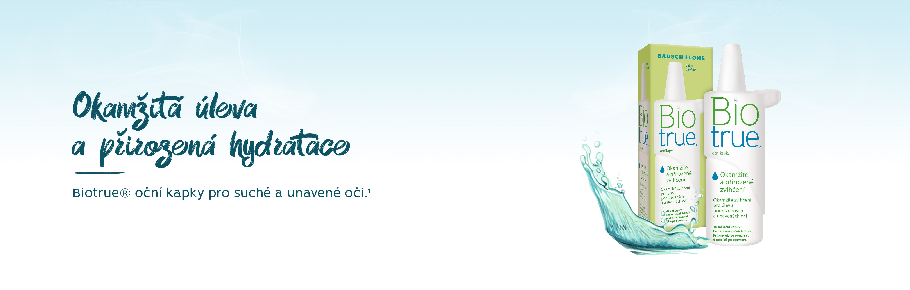
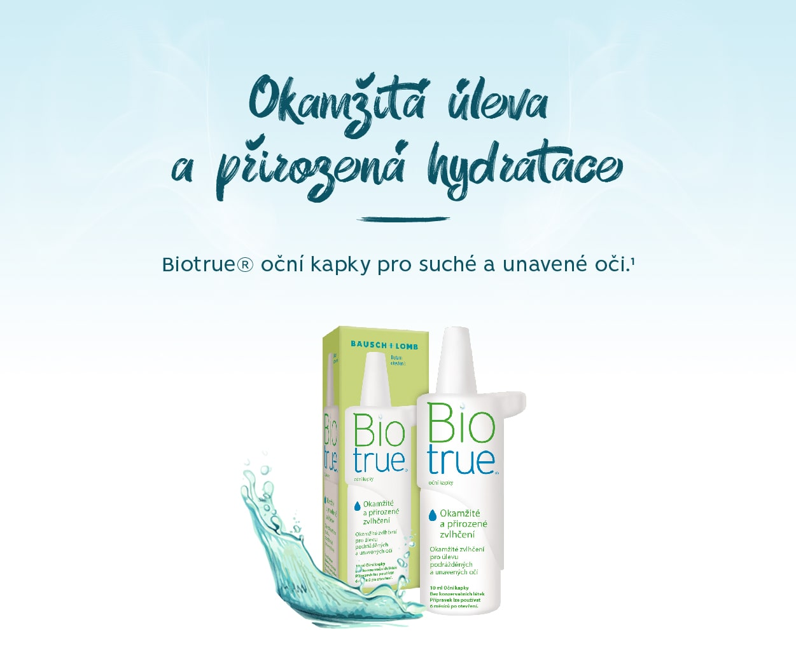
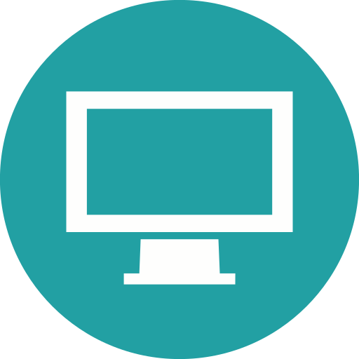
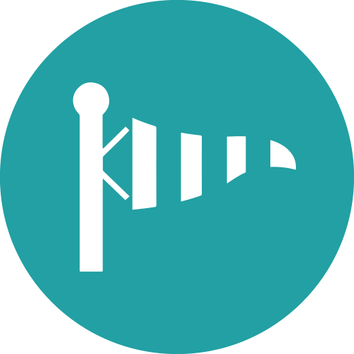
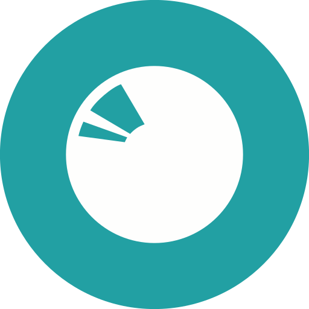
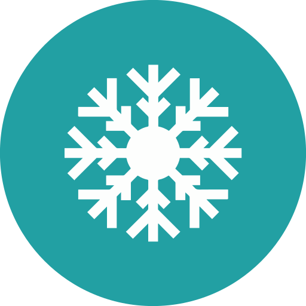
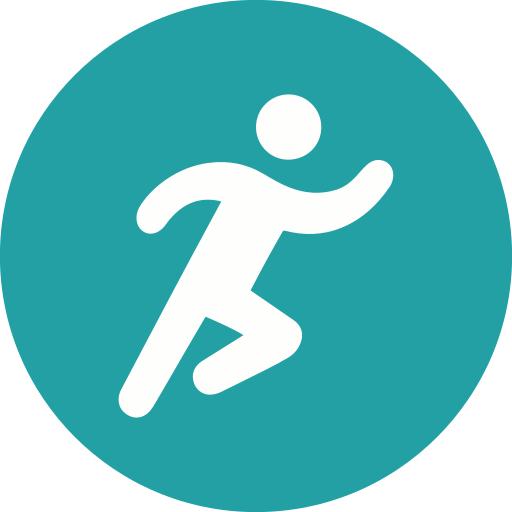
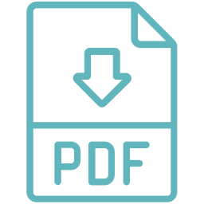

<!DOCTYPE html>
<html lang="en">
<head>
  <meta charset="UTF-8">
  <meta http-equiv="X-UA-Compatible" content="IE=edge">
  <meta name="viewport" content="width=device-width, initial-scale=1.0">
  <title>Biotrue® - Očné kvapky</title>
  <link rel="stylesheet" href="styles.css">
  <link rel="icon" type="image/png" href="assets/favicon_16x16px.png"/>
  <script id="Cookiebot" src="https://consent.cookiebot.com/uc.js" data-cbid="6d2145b4-b50c-43b6-a989-01cfd087ab9e" data-blockingmode="auto" type="text/javascript"></script>
</head>
<body>
  <header class="navigation-header">
    <div class="navigation-elements">
      <a href="/" class="bl-logo"></a>
      <div class="navigation">
        <div class="navigation__item">
          <a href="/#produkty">Produkty</a>
        </div>
        <div class="navigation__item">
          <a href="#vyskusat-zdarma">Vyskúšať zdarma</a>
        </div>
        <div class="navigation__item navigation__item--bubble">
          <a href="https://sosovkybausch.sk/" target="_blank">Nájsť očného špecialistu</a>
        </div>
        <a href="https://www.facebook.com/BauschLombCR" target="_blank" class="fb-logo">
          <svg version="1.1" id="Capa_1" xmlns="http://www.w3.org/2000/svg" xmlns:xlink="http://www.w3.org/1999/xlink" x="0px" y="0px"
            viewBox="0 0 512 512" style="enable-background:new 0 0 512 512;" xml:space="preserve">
            <style type="text/css">
              .st0{fill:#0C5465;}
              .st1{fill:#FFFFFF;}
            </style>
            <circle class="st0" cx="256" cy="256" r="256.1"/>
            <path class="st1" d="M220.8,275.3c-16,0-31.3,0-47,0c0-19.6,0-38.7,0-58.3c15.6,0,30.9,0,47,0c0-3.6,0-6.7,0-9.7
              c0.2-17.7-1.2-35.5,3.3-52.9c7-27.3,22.2-47.2,50.9-54.1c5.3-1.3,10.9-1.7,16.4-1.8c15.5-0.3,30.9-0.1,46.9-0.1
              c0,19.4,0,38.3,0,58.2c-5.5,0-10.9-0.2-16.4,0c-6,0.2-12.2,0.2-18.2,1.3c-13.3,2.5-22.1,11.7-23.6,25.2c-1.1,9.9-0.8,19.9-1.2,29.9
              c-0.2,4.1,2.3,4.2,5.4,4.2c15.5-0.1,31,0,46.5,0c2,0,4,0,7.1,0c-1.3,7.6-2.6,14.6-4,21.5c-2.1,10.6-4.5,21.2-6.4,31.9
              c-0.6,3.8-2.3,4.8-5.9,4.7c-12-0.2-24,0.2-36-0.2c-5.3-0.2-6.9,1.4-6.9,6.8c0.2,42.6,0.1,85.4,0.1,128c0,7.6,0,7.6-7.6,7.6
              c-14.2,0-28.4,0-42.6,0c-7.9,0-7.9,0-7.9-7.6c0-42.3,0-84.6,0-126.9C220.8,280.7,220.8,278.6,220.8,275.3z"/>
          </svg>
        </a>
      </div>
      <div class="navigation navigation-mobile">
        <div class="hamburger" id="hamburger">
          <div class="bar1"></div>
          <div class="bar2"></div>
          <div class="bar3"></div>
        </div>
      </div>
    </div>
  </header>
  <div class="navigation-mobile-items" id="mobile-nav">
    <div class="navigation__item">
      <a href="/#produkty">Produkty</a>
    </div>
    <div class="navigation__item">
      <a href="#vyskusat-zdarma">Vyskúšať zdarma</a>
    </div>
    <div class="navigation__item navigation__item--bubble">
      <a href="https://sosovkybausch.sk/" target="_blank">Nájsť očného špecialistu</a>
    </div>
    <a href="https://www.facebook.com/BauschLombCR" target="_blank" class="fb-logo">
      <svg version="1.1" id="Capa_1" xmlns="http://www.w3.org/2000/svg" xmlns:xlink="http://www.w3.org/1999/xlink" x="0px" y="0px"
        viewBox="0 0 512 512" style="enable-background:new 0 0 512 512;" xml:space="preserve">
        <style type="text/css">
          .st0{fill:#0C5465;}
          .st1{fill:#FFFFFF;}
        </style>
        <circle class="st0" cx="256" cy="256" r="256.1"/>
        <path class="st1" d="M220.8,275.3c-16,0-31.3,0-47,0c0-19.6,0-38.7,0-58.3c15.6,0,30.9,0,47,0c0-3.6,0-6.7,0-9.7
          c0.2-17.7-1.2-35.5,3.3-52.9c7-27.3,22.2-47.2,50.9-54.1c5.3-1.3,10.9-1.7,16.4-1.8c15.5-0.3,30.9-0.1,46.9-0.1
          c0,19.4,0,38.3,0,58.2c-5.5,0-10.9-0.2-16.4,0c-6,0.2-12.2,0.2-18.2,1.3c-13.3,2.5-22.1,11.7-23.6,25.2c-1.1,9.9-0.8,19.9-1.2,29.9
          c-0.2,4.1,2.3,4.2,5.4,4.2c15.5-0.1,31,0,46.5,0c2,0,4,0,7.1,0c-1.3,7.6-2.6,14.6-4,21.5c-2.1,10.6-4.5,21.2-6.4,31.9
          c-0.6,3.8-2.3,4.8-5.9,4.7c-12-0.2-24,0.2-36-0.2c-5.3-0.2-6.9,1.4-6.9,6.8c0.2,42.6,0.1,85.4,0.1,128c0,7.6,0,7.6-7.6,7.6
          c-14.2,0-28.4,0-42.6,0c-7.9,0-7.9,0-7.9-7.6c0-42.3,0-84.6,0-126.9C220.8,280.7,220.8,278.6,220.8,275.3z"/>
      </svg>
    </a>
  </div>
  <div class="content">
    <div class="banner">
      
      
      <p class="product-guide product-guide--kapky">Zdravotnícka pomôcka. Pozorne si prečítajte návod na použitie.</p>
    </div>
    <div class="green-banner green-banner--text-only">
      <div class="green-banner-text">
        <h1>Biotrue<sup>®</sup> Očné kvapky</h1>
        <h4>Okamžitá úľava a prirodzená hydratácia každý deň<sup>1</sup></h4>
        <p class="longer">
          Kvapky Biotrue<sup>®</sup> sú vyvinuté na zmiernenie príznakov syndrómu suchého oka spôsobeného okolitým prostredím alebo používaním kontaktných šošoviek.
          <br>
          Poskytujú prirodzenú hydratáciu vďaka špecifickému zloženiu bez konzervačných látok na báze kyseliny hyalurónovej.<sup>2</sup>
        </p>
      </div>
    </div>
    <div class="generic-header-with-paragraph">
      <h2>Inšpirované fyziológiou vašich očí<sup>TM</sup></h2>
      <p>Kvapky Biotrue<sup>®</sup> obsahujú polymérnu kyselinu hyalurónovú (hyaluronát sodný),<br>
        ktorá sa prirodzene nachádza v štruktúre zdravých ľudských očí a v slznom filme.</p>
    </div>
    <div class="section-separator section-separator--green"></div>
    <section class="benefit-cards benefit-cards--with-header benefit-cards--white">
      <h2>Kvapky Biotrue<sup>®</sup> pomáhajú zmierniť pocity unavených<br>
        alebo suchých očí, ktoré sú spôsobené napríklad:</h2>
      <div>
        <div class="benefit-card">
          <div class="benefit-icon">
            
          </div>
          <h3>Častá a dlhá<br>
            práca na počítači</h3>
        </div>
        <div class="benefit-card benefit-card--long-descr">
          <div class="benefit-icon">
            
          </div>
          <h3>Poveternostné<br>
            podmienky</h3>
        </div>
        <div class="benefit-card benefit-card--long-descr">
          <div class="benefit-icon">
            
          </div>
          <h3>Cestovanie<br>
            v lietadle</h3>
        </div>
        <div class="benefit-card benefit-card--long-descr">
          <div class="benefit-icon">
            
          </div>
          <h3>Nosenie<br>
            kontaktných<br>
            šošoviek</h3>
        </div>
        <div class="benefit-card benefit-card--long-descr">
          <div class="benefit-icon">
            
          </div>
          <h3>Klimatizácia</h3>
        </div>
        <div class="benefit-card benefit-card--long-descr">
          <div class="benefit-icon">
            
          </div>
          <h3>Športové<br>
            aktivity</h3>
        </div>
      </div>
    </section>
    <section>
      <div class="green-banner green-banner-popis">
          <div class="green-banner-biotrue-popis">
            <div class="green-banner-biotrue-popis-text">
              <p>Inovatívny a jedinečný Control Grip systém kvapiek Biotrue<sup>®</sup>
                zjednodušuje manipuláciu pri kvapkaní.</p>
              <p class="mobile"></p>
              
              <ul>
                <li>Bez konzervačných látok.</li>
                <li>Možno používať 6 mesiacov po otvorení.</li>
                <li>Obsahuje 0,24 % kyseliny hyalurónovej.</li>
              </ul>
            </div>
          </div>
          <p>Zdravotnícka pomôcka, pozorne si prečítajte návod na použitie.</p>
          <a href="P1CZSKSI01.pdf" target="_blank" class="download-link">Návod na použitie </a>
      </div>
    </section>
    <section class="cat" id="vyskusat-zdarma">
      <div class="cat-header cat-header-no-margin">
        <h2>Získajte skúšobný pár ZDARMA</h2>
        <h3>Ešte ste nevyskúšali kontaktné šošovky Biotrue<sup>®</sup> ONEday?</h3>
      </div>
      <div class="cat-separator"></div>
      <div class="cat-text">
        Teraz máte možnosť ich vyskúšať u vášho očného špecialistu. Skúšobný pár je zdarma. Aplikácia kontaktných šošoviek si vyžaduje očné vyšetrenie. V cene skúšobného páru nie sú zahrnuté poplatky za vyšetrenie. O podrobnostiach vás bude informovať váš očný špecialista.
      </div>
      <div class="cat-link">
        <a href="https://sosovkybausch.sk/" target="_blank">
          Vyhľadať<br> očného špecialistu
        </a>
      </div>
    </section>
    <section class="reference">
        <h3>Referencie</h3>
        <p>1. Jones L et al. TFOS DEWS II Management and Therapy Report. The Ocular Surface 15 (2017) 575-628.<br>
          2. Pucker AD et al. Over the counter (OTC) articial tear drops for dry eye syndrome. Cochrane Database Syst Rev. 2017;2:CD009729.</p>
    </section>
    <div class="reference-separator"></div>
    <section class="side-effects">
      <div class="side-effects-logo"></div>
        <div class="side-effects-text">
        <h4>Hlásenie nežiaducich účinkov liekov:</h4>
        <a href="mailto:pv.slovakia@bausch.com" target="_blank">pv.slovakia@bausch.com</a>
        alebo na tel. č. +421 910 101 334.<br />
        <br />
        <h4>Hlásenie nežiaducich účinkov a sťažností na kvalitu zdravotníckych pomôcok:</h4>
        <a href="mailto:slovakia.mdcomplaints@bausch.com" target="_blank">slovakia.mdcomplaints@bausch.com</a><br />
        <br />
        <h4>Odborné otázky k našim výrobkom:</h4>
        <a href="mailto:SlovakRepublic.medical.info@bausch.com" target="_blank">SlovakRepublic.medical.info@bausch.com</a><br />
        <br />
        <h4>VPOIS - Verejne prístupná odborná informačná služba:</h4>
        <a href="mailto:kristyna.nemcova@bausch.com" target="_blank">kristyna.nemcova@bausch.com</a><br />
        <br />
        <h4>Biela linka – Informačná služba pre nevidomých a slabozrakých:</h4>
        Dostupnosť v pracovných dňoch je od 10:00 - 16:00 na tel. č. +420 603 978 356
      </div>
    </section>
      <footer class="footer">
      <div class="footer__top">
        <div>
          <h3>Kontakty</h3>
          <p>
            Bausch & Lomb Poland sp. z o.o., organizačná zložka<br />
            Galvaniho 7/A , 821 04, Bratislava, Slovensko<br />
            <br />
            Tel.: +420 603 978 356<br />
            IČ: 2744 8169, DIČ: CZ 2744 8169
          </p>
        </div>
      </div>
        <p>2023 Bausch&Lomb incorporated VIC-112023-081</p><p><a href="/oou.docx" target="_blank">Ochrana osobných údajov</a></p>
      </footer>
  </div>
  <script src="main.js"></script>
</body>
</html>
